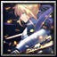

Player profile
zzplayerxdzz
Rank #12server.eurobattle.netSeason 2
Most played · 藤原 妹紅
Matches208 wins · 12 losses
Win rate40%
Avg K / D / A45.2 / 39.8 / 12.6
Avg APM170
Avg damage dealt274.9k
Avg damage taken161.3k
Heroes played
Explore heroes →| HERO | MATCHES | WIN RATE | AVG K / D / A | AVG DMG |
|---|---|---|---|---|
藤原 妹紅Most played | 5 | 20% | 37.6 / 43.0 / 15.8 | 241.3k |
沖田総司 | 3 | 33% | 50.3 / 41.3 / 12.0 | 315.3k |
ディケイド | 2 | 100% | 64.5 / 29.5 / 8.5 | 321.8k |
【Silver Arbiter】 | 2 | 100% | 41.0 / 40.0 / 12.0 | 248.4k |
Uchiha Itachi | 2 | 50% | 47.0 / 44.5 / 14.5 | 284.5k |
『七夜志貴』 | 2 | 0% | 41.5 / 34.5 / 13.0 | 234.9k |
V バージルースパーダの息子 | 1 | 0% | 40.0 / 38.0 / 12.0 | 296.3k |
孫悟飯 | 1 | 0% | 23.0 / 41.0 / 11.0 | 199.6k |
 「騎士王」 | 1 | 0% | 78.0 / 37.0 / 10.0 | 362.1k |
永劫の火鳥 | 1 | 0% | 37.0 / 43.0 / 7.0 | 308.1k |
Averages use recorded statistics only; unavailable historical values are shown as —.
Recent matches
Open a match for its scoreboard and kill matchups.
LOSS59:59
MCB #2000232
14 Nov 2026 · 03:00 WIB
54.0 / 40.0 / 11.0View match →
WIN62:53
MCB #2000231
14 Nov 2026 · 01:30 WIB
72.0 / 35.0 / 8.0View match →
LOSS69:08
MCB #2000230
14 Nov 2026 · 00:16 WIB
50.0 / 46.0 / 14.0View match →
WIN60:23
MCB #2000229
13 Nov 2026 · 23:02 WIB
47.0 / 38.0 / 11.0View match →
LOSS63:39
MCB #2000228
13 Nov 2026 · 01:32 WIB
40.0 / 38.0 / 12.0View match →
LOSS56:02
MCB #2000227
12 Nov 2026 · 23:51 WIB
35.0 / 38.0 / 14.0View match →
WIN47:38
MCB #2000224
12 Nov 2026 · 04:05 WIB
39.0 / 29.0 / 15.0View match →
WIN51:04
MCB #2000223
12 Nov 2026 · 02:01 WIB
57.0 / 24.0 / 9.0View match →
LOSS53:59
MCB #2000211
07 Nov 2026 · 04:25 WIB
23.0 / 41.0 / 11.0View match →
WIN61:29
MCB #2000210
07 Nov 2026 · 02:00 WIB
59.0 / 51.0 / 15.0View match →